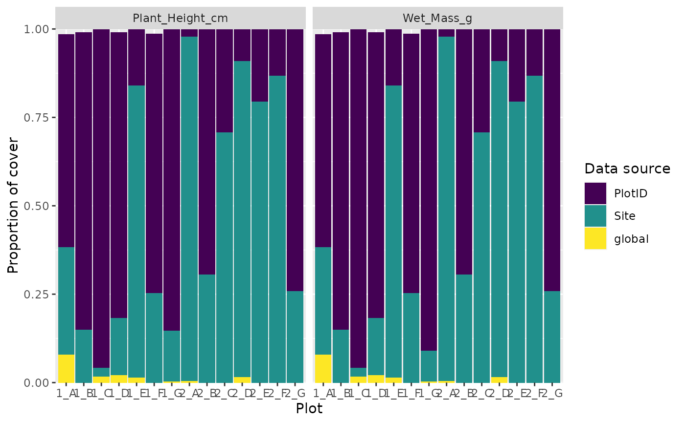

Function calculates the trait coverage of the community for each level of the sampling hierarchy and makes a barplot.
Shows at which level the data are coming from in each plot.
# S3 method for imputed_trait autoplot(imputed_traits, other_col_how, ...)
| imputed_traits | output from trait_np_bootstrap or trait_parametric_bootstrap funtion. |
|---|---|
| other_col_how | what to do with the other columns in other data. Options are to `filter` by one of the columns, add them to the x-`axis`, `facet` by them, or to `ignore`. |
| ... | optional filters for use with `other_col_how = "filter"` |
a ggplot
#>data(community) data(trait) imputed_traits <-trait_impute(comm = community, traits = trait, scale_hierarchy = c("Site", "PlotID"), taxon_col = "Taxon", value_col = "Value", trait_col = "Trait", abundance_col = "Cover") autoplot(imputed_traits)